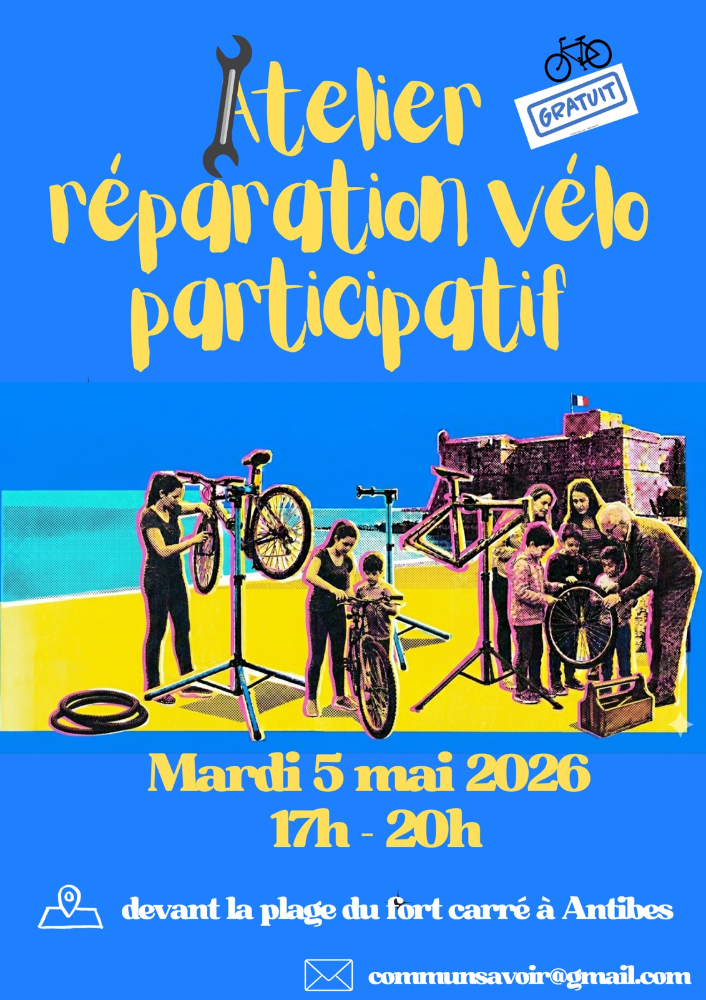

Partager, Apprendre, Réparer : Le savoir est un bien commun.

Votre frein grince ? Vos vitesses sautent ? Ou vous avez simplement peur de la crevaison ? Ne restez pas bloqué !
Venez apprendre la mécanique ou partager un moment entre passionnés du vélo au quotidien.
📍 Lieu : Plage devant le Fort Carré, Antibes
📅 Date : Mardi 5 mai 2026
⏰ Horaires : 17h00 - 20h00
Nous fournissons les pieds d'atelier et l'outillage spécifique. Venez avec vos pièces de rechange si nécessaire !
Commun Savoir est une association née de l'envie de lutter contre l'obsolescence et l'isolement. Nous croyons que la transmission des compétences est la clé d'une société plus résiliente.
Que vous soyez expert en mécanique, pro de la couture ou simplement curieux d'apprendre, votre place est parmi nous !